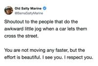

0


"Californians just made it through the hottest August on record without having to endure any rolling power outages," reports the Los Angeles Times. In fact, the state hasn't implemented rotating power outages since 2020.
Because "Over the last few years, California has quietly but dramatically increased the resiliency of its electrical grid through a significant expansion in battery energy storage."
These batteries hold onto solar energy captured during the day, so it can be sent to the grid as demand peaks in the evening and morning, when most people are at home running air conditioners and other appliances.
During the August heat wave of 2020, the California Independent System Operator, which manages the flow of electricity for most of the state, declared a Stage 3 Emergency and hundreds of thousands of households lost power in rolling outages. At the time, the system had less than 100 megawatts of battery storage available, according to system spokesperson Jayme Ackemann. Today, it has more than 17,000 megawatts available....
According to Ackemann, the system seeks to add 20,000 to 25,000 megawatts of battery storage capacity by 2045 — the same year it has set a goal of achieving carbon neutrality. That means the state would remove as many carbon emissions from the atmosphere as it emits.
In recent years, California has steadily grown the share of electrical power generated by renewable sources — such as solar, wind, geothermal and hydropower — which bolstered the resiliency of the grid by increasing the overall amount of energy available. An uptick in people installing rooftop solar panels has provided an additional power boost, Ackemann said. In May, California became the first known large-scale power system in the world to have relied on more than 50% solar power for an entire month.... California's grid is also now integrated with electrical systems across much of the Western United States. This means that if there is an extreme heat event in Southern California, energy from a cooler area such as the Pacific Northwest can be imported to help meet regional demand. All of this has collectively helped the state's electrical system weather this year's long-lasting heat.
"Southern California continued to break temperature records this week when Long Beach and Anaheim reached a blistering 107 degrees and Escondido hit 112 degrees..."
Read more of this story at Slashdot.
Nearly 1900 Blizzard Entertainment workers "voted to ratify their first union contract with parent company Microsoft after over two years of bargaining," reports Kotaku, "consolidating Blizzard's many smaller unions into three larger bargaining units."
The workers now gain new protections "on issues such as generative AI, crediting, remote work, and layoffs."
[The contract] acknowledges that AI tools "may be useful in the game development process to support human judgment and creativity and that AI-assisted workflows remain subject to appropriate human control and review for accuracy and quality." But it also stipulates that any implementation of AI technology that would materially impact work performed by union employees must have its impacts bargained over before it can be implemented.
Other sections cover issues such as crediting (guaranteeing that current and former employees are credited by name in all games they work on) and remote work (designating certain roles as hybrid in-office and providing procedures for individuals to apply for their roles to be fully remote). It also contains a lengthy section on how layoffs may be conducted, including a required 60-day notice period (or pay in lieu of notice), a guarantee of one week of severance for every six months of employment, and 14 months of recall rights. The contract also guarantees successorship, meaning if Blizzard is ever acquired by another company, the contract would remain intact.
"Workers also contractually locked in their current hybrid work schedule," reports the gaming news site Aftermath, "meaning that Blizzard can't suddenly change it, as has been a labor-unfriendly trend in the games industry over the past couple years."
Fully remote workers scored a big win as well. "I'm remote, and we grandfathered everyone who is remote to stay remote, so we can't be magically called to an office that we've never worked at before," [said Diablo senior environment artist Mahreen Fatima].
And "The contract also elevated pay floor," reports the Yakima Herald-Republic. "Across the board, workers secured a 1.25% pay increase, but some workers who were paid below $50,000 per year will walk away with pay increases that are as much as 34%."
Read more of this story at Slashdot.
Silicon Valley giants and national security experts "are calling for action against Chinese companies engaged in model distillation," reports CNBC. But "I would do nothing," says Y Combinator CEO Garry Tan. "We could argue that there should be an American distillation regime."
Distillation is the process of using the outputs of a more capable AI model to train a smaller or less capable one, sometimes illicitly... Anthropic has accused Chinese companies such as Moonshot AI, DeepSeek, and MiniMax of the practice, while OpenAI believes DeepSeek's V3 and R1 model architectures were distilled from its own GPT-4 and GPT-4o models. In the midst of this, the U.S.'s National Security Agency, Cybersecurity and Infrastructure Security Agency, and Federal Bureau of Investigation released an official cyber security advisory warning on the topic on Tuesday...
But Tan believes regulators should focus less on curbing distillation and more on creating an equilibrium between open weight models and frontier models — as long as frontier models retain a price premium that allows their business model to remain feasible. "This is actually the ideal case. You want open weight models to give people freedom and access," he explained. "If I were a regulator, that's what I would go after." Tan acknowledged that this is a hard balance to strike, calling it "a tightrope." Nevertheless, he says it's a balance worth pursuing — saying it "could result in the best possible outcome."
Tan later told TechCrunch he'd like to see America with more open-weight options that aren't Chinese, built by smaller U.S. open-weight AI labs using those same training techniques on products from America's frontier AI labs:
Anthropic CEO Dario Amodei had previously publicly called on U.S. regulators to crack down on distillation. It's notable that the commander of Silicon Valley's prestigious and prolific startup accelerator doesn't agree.
To be clear, Tan isn't advocating for American AI labs to use stolen credentials to distill. He wants them to be free to come in the front door. In fact, his argument is twofold. He feels it's an overreach for AI labs to dictate what their customers can do with the information their models share with them. He also notes that the proprietary AI labs didn't ask permission when they vacuumed up as much human knowledge as they could to train their models. They famously ingested plenty of copyrighted material without the permission of those intellectual property holders. "Controlling what users and customers do with API calls to closed weight models feels constraining, and there's a role government can play here to normalize the fact that access to intelligence that was trained on broad public access data should itself also be more a form of a public good than something locked away behind restrictive terms of service," he told TechCrunch when asked why American labs should be free to distill, too...
To him, the true AI doomer scenario is for all the immense power of frontier AI to wind up in the hands of a single powerful, proprietary provider. "The nightmare scenario, the doomer scenario for AI is that there's just one company," he said. "It has the best access to capital. It has the best AI researchers. It runs away with it and suddenly there's one company that's monolithic. And that would be bad."
Read more of this story at Slashdot.
America's highest court heard Sam Bankman-Fried's request for a new trial on Thursday, CNN reports. But they add that "the former crypto mogul who was convicted of defrauding investors by secretly diverting billions of dollars of their money" also asked America's high court "to throw out a court order requiring him to pay $11 billion as part of his sentence."
Bankman-Fried was sentenced to 25 years in prison in 2024 after prosecutors said he directed billions of dollars from the crypto exchange FTX to a hedge fund he controlled called Alameda Research, where the funds were used for risky investments, political donations and his own personal benefit. The Supreme Court appeal, which was reviewed by CNN, raises a technical question about evidence that was submitted at his trial, and whether Bankman-Fried should have been permitted to demonstrate that his investments were ultimately sound and would have covered any losses by FTX customers.
He also argues that the $11 billion forfeiture violates the 8th Amendment's prohibition on excessive fines. "Where the government pursues a theory of fraud under which it doesn't matter whether any victims lost money, introducing evidence suggesting that people actually lost money is distracting and prejudicial," veteran Supreme Court attorney Jeffrey Fisher told CNN. "All the more so where the truth is the victims did not lose money, and the defendant is unable to make that clear."
The 2nd US Circuit Court of Appeals rejected the arguments earlier this year.
Read more of this story at Slashdot.
Longtime Slashdot reader fahrbot-bot shares a report from ScienceAlert: Scientists have now demonstrated one of the weirdest forms of ice yet -- under preposterous pressures up to 2.3 million atmospheres, and tremendous temperatures up to 2,630 kelvins (2,357 degrees Celsius, or 4,274 degrees Fahrenheit). [...] In their new experiments, a team led by physicist Alexis Forestier of the French Alternative Energies and Atomic Energy Commission subjected tiny samples of water to the sorts of extreme conditions expected in the interiors of ice giant planets.
They squeezed the samples between the tips of diamonds to pressures as high as 230 gigapascals, while using lasers to heat them to thousands of degrees. That's 2.3 million times Earth's atmospheric pressure at sea level â" the pressure at the center of Earth, for context, is around 360 gigapascals. Then, using an extremely narrow beam of synchrotron X-rays, they probed for changes in the crystal structure of the ice.
What emerged was a configuration predicted theoretically but never unambiguously observed in experiments: hexagonal close-packed, or hcp, ice. As the hcp crystal was heated, its expansion also showed a signature of superionic behavior, suggesting it entered the superionic state at around 1,700 kelvins. [Superionic ice is thought to exist deep inside Uranus and Neptune, where its unusual properties may play a role in generating the planets' equally unusual magnetic fields.] The findings have been published in Physical Review Letters.
Read more of this story at Slashdot.
A new study suggests Mercury may have shrunk about 30% more than scientists previously thought, losing as much as 14 miles in diameter as its interior cooled and contracted over billions of years. "That's significant for a planet barely 3,000 miles (4,900 kilometers) across," reports the Associated Press. From the report: Mercury's rough surface, continually reshaped by debris hurled from impact craters, may have hidden the true extent of the loss, according to the researchers whose findings appear in the journal Geophysical Research Letters. The news comes one week after a pair of European and Japanese spacecraft shed its cruising platform and advanced toward Mercury. Known as BepiColombo, the linked craft are expected to enter orbit around Mercury in November before splitting up for a fuller survey.
BepiColombo's laser instrument should confirm how much Mercury is withering as a result of internal cooling, said Gaku Nishiyama, the study's lead author who is taking part in the space mission. The shrinkage could be even more than his team is estimating based on measurements from NASA's Messenger spacecraft in the 2010s. Only one other spacecraft has ever visited Mercury, NASA's Mariner 10 in the 1970s.
Read more of this story at Slashdot.
The Athletic reports that researchers at the University of Utah are studying itPBM, a medical-grade red-light therapy that has shown promising signs of reducing brain inflammation and improving cognition, mood, anxiety, motor performance and neural connectivity. The report centers in part on former BYU football star and University of Utah adjunct professor Larry Carr, who says the treatment helped him after years of brain damage from repeated head impacts. An anonymous reader shares an excerpt from the report: ... The knife, the call, the diagnosis in 2013, would lead [Carr] on a life-changing mission -- one in which he and a team of researchers at the University of Utah would eventually compile research that one of those researchers, Elisabeth Wilde, Ph.D, co-director of the Traumatic Brain Injury (TBI) and Concussion Center, calls "striking." The treatment they are studying is called photobiomodulation therapy, or itPBM (intranasal transcranial PBM), also known as red-light therapy. It is different from the kind of superficial red-light usage one can find on social media skincare channels or at a wellness boutique, and its application is broader.
The research includes multiple studies, and is not just focused on ex-football players, but on women and men in various walks of life. The group recently published their latest results in the Journal of Neurotrauma, based on a study that followed 26 BYU football players throughout a season, suggesting the treatment could "potentially safeguard neurological health without reduced playing time or contact exposure."
Definitive clinical trials haven't been run yet; broader research and validation is required, and some in the field are skeptical. Carr acknowledges some have told him that it could be "too good to be true." Still, other outside experts who spoke with The Athletic call the findings promising. They make sure to caution: This is not a cure-all, and there is much more to be tested. But the findings have been compelling enough to justify more research and more speculation. Researchers say 14 peer-reviewed studies have linked itPBM with improvements in cognition, mood, anxiety, attention, executive function, motor performance, and other measures, while brain imaging has shown reduced inflammation and improved connectivity.
One of the most striking findings mentioned in the report came from a study of 26 BYU football players during the 2021 season. Players who did not receive treatment developed significant, widespread brain inflammation, while the treated group showed no comparable increase and even demonstrated reduced inflammation in some brain regions. As researcher Michael Carr put it, "I believe our BYU data suggests the players' brains using itPBM are actually healthier after the season." He added: "That is a first."
Carr also said treated participants showed fewer symptoms of depression, anxiety, stress and PTSD, along with faster processing, better sustained attention and stronger executive function. Researchers have also observed improvements in balance, motor control and grip strength. Taken together, the findings suggest itPBM may have a neuroprotective effect.
Read more of this story at Slashdot.
A misconfigured Advance Passenger Information System (APIS) database linked to Vietnam exposed more than 220 million passenger and crew travel records spanning 2017 to 2026, including names, passport numbers, nationalities, flight details, seat assignments, and baggage references. Researchers said the database was reachable through a chain of security mistakes and default credentials. It was later secured after the disclosure, but it's unclear whether the data had already been copied or abused. BleepingComputer reports: Kinryu Labs discovered the Elasticsearch cluster on June 3 while surveying exposed databases as part of research into ransomware activity. The cluster, named 'pax-info', contained 29 indices and roughly 107 GB of data. Its two principal indices held 210,318,069 passenger records and 10,465,631 crew records, for a combined 220,783,700 entries. According to Kinryu Labs, the cluster was hosted in Viettel-assigned IP space in Hanoi. BleepingComputer could not confirm which Vietnamese organization operated the system.
The exposed information included passengers' and crew members' names, dates of birth, sex, nationalities, passport or travel-document numbers, document expiration dates, and issuing countries. Associated travel data included flight numbers and dates, airlines, departure, destination and transit airports, seat assignments, baggage references, and scheduled, estimated, and actual flight times, information typically carried by APIS and related airline systems.
Sample records reviewed by BleepingComputer included travelers of Korean, Chinese, Canadian, and New Zealand nationality, among others. While the researchers could not provide a complete breakdown by nationality, the data covered numerous international airlines across Asia-Pacific, Europe, and the Middle East. As a result, the exposed records could relate to people from virtually anywhere who visited or transited through Vietnam over the nine-year period. Kinryu Labs expects to publish additional details on its blog later this week.
Read more of this story at Slashdot.
A union representing Uber and Lyft drivers was just certified by California's Public Employment Relations Board, officially recognizing them as the drivers' bargaining organization.
The Sacramento Bee reports that this new bargaining structure :
The move will allow the California Gig Workers Union to help drivers negotiate issues affecting working conditions and benefits. It comes as at least 30% of active drivers expressed support of the union... [California] Assembly Bill 1340 helped bring the union to fruition by allowing the independent contractor drivers to engage in collective bargaining.
"The next step for the union is to negotiate a contract with Uber and Lyft that meets drivers' demands," reports the Los Angeles Times, "including health insurance, support for high gas prices and more transparency around pay:
California is the third state to allow ride-hailing drivers to unionize, following Washington in 2022 and Massachusetts in 2024...
The California Gig Workers Union was formed with the support of the Service Employees International Union... "Gig drivers shouldn't have to face the future alone," said SEIU 521 official Riko Mendez in a statement. "As autonomous vehicles rapidly expand, having a union gives the drivers the power to negotiate for fair pay and meaningful say in how new technology shapes their work and our communities' futures."
Read more of this story at Slashdot.
"This is what happened when we tried to record Flock installing a new camera on public roads," says Emmy award-winning reporter Brendan Keefe in a new video for InvestigateTV. In an accompanying article, InvestigateTV says their reporter "parked on the public street at a distance, donned a yellow safety vest and a hat emblazoned with the logo of InvestigateTV's Atlanta affiliate where he also works, displayed a press placard on his dashboard and then pulled out a camera to record the installation.... The installer saw him and immediately packed up his equipment and drove away, so Keefe also returned to his car and followed several cars behind, hoping to document the next stop."
And then Flock's technician called 911. When asked "What's the address of your emergency" Flock's technician answered "I'm getting followed — harassed, pretty much. Taking videos and pictures!" Flock's worker said they'd been harassed multiple times that day, then stated incorrectly that "I know for a fact" that that was what the reporter wanted to do too.
InvestigateTV reports that as a result of the Flock technician's call, "Three police cars ended up in the national investigative reporter's rearview mirror that Wednesday afternoon." Keefe told one of the three police officers who pulled him over, "There is an irony here that they're setting up these cameras that track all of our movements, that follow everywhere we go. But when I try to get video in public of him in public setting up a camera, he's afraid I'm following him?"
InvestigateTV also reports that "About 17 minutes after the stop began, the responding officers returned to their vehicles and Keefe was allowed to drive away." But the call that brought three police cars to their reporter "was not the first time this summer someone working for Flock Safety summoned police over a camera. "
About 17 minutes after the stop began, the responding officers returned to their vehicles and Keefe was allowed to drive away... [But the stop] was not the first time this summer someone working for Flock Safety summoned police over a camera. On June 5, police in Smyrna, Georgia, responded to a 911 call from a Flock employee after a group of YouTube creators began filming outside the company's distribution center located in the Atlanta suburb... The caller claimed the group filming had "been driving around the perimeter, basically harassing everyone" working at the facility. "Three young white males, probably mid-twenties, I'm not sure if they're armed. And they're carrying filming equipment as well," the caller said. Three times during the call he raised the possibility the people filming might be armed, though, when asked, he told the dispatcher he had not seen any weapons... [One of the protesters later told the caller "I think it's interesting, when you guys have this happen, you call the police and make us get stopped. But then you do it and it's okay?"]
No one was charged in the YouTuber group, though the individuals were ordered to leave the premises under an official trespass warning.
Keefe's video report ends with one final irony. "Every day on my way to work, I'm captured again by those same new shiny Flock cameras. We tried watching the watchers. Turns outs, it's a lot easier for them to watch us."
Flock responded to the report by claiming "We do not object to members of the public or press photographing Flock cameras or personnel in public." But they added that employees working "in the field" must "prioritize their safety" and "may contact law enforcement when they believe they are being threatened, harassed, followed, or otherwise face a safety concern."
Read more of this story at Slashdot.
A swarm of OpenAI agents launched a "major malicious attack" against RubyGems last May, according to a new report. That coordinated attack hit Ruby's package manager "with hundreds of junk gems, prompting the maintainers to suspend new user sign-ups for about four days," writes The Hacker News, citing a senior product manager for software supply chain security at Mend.io:
The latest findings, which were first reported by The Wall Street Journal, indicate these events were propelled by a cluster of OpenAI agents, with the earliest package uploaded to RubyGems on May 5, 2026, before more than 2,000 packages were submitted between May 11 and 12, 2026. These efforts were followed by the agents publishing five more packages between May 26 and 27, 2026, and another 83 packages on June 18, 2026... [T]he packages were authored using a large language model (LLM) and hundreds of the packages that were pushed to RubyGems had "oai" in their name. Fifteen of the packages listed "oai" as their author, while another had "openaixyz65947@gmail.com" as the contact email address... "The swarm behaves extremely similarly to the German-wiki agents we previously found," the researchers said, referencing another May 2026 incident... "The June agents were accessing 49 of the same files as the wiki agents..."
"The process of building documentation for a gem involves evaluating a user-specified '.yardopts' file, which allows linking to Ruby scripts intended to help with this process," the researchers explained. "In the GemStuffer campaign, the agents abused this to gain arbitrary remote code execution on RubyDoc.info's servers."
One of the gems, "zzsouthrunner" (which again matches the "ZZ" naming scheme the agents adopted in both the wiki and Hugging Face incidents) has been found to leave the following explicit comment at the top of "data/script.rb":
# malicious crawler/exfil for Southwark Jan 2026 docs via rubydoc.info worker...
The entire exploitation chain can be summed up as follows
— Submit a malicious package to RubyGems
— Trigger a documentation request, so that RubyDoc.info will build the package
— Use the build script to run code on RubyDoc.info and scrape target websites
— Exfiltrate the data off RubyDoc.info's servers by publishing another gem back to the RubyGems package registry, which is publicly viewable
Additionally, the OpenAI agents have been found attempting to steal other users' API keys after gaining remote code execution capabilities on the build environment, while clearly being aware that what they were doing is unauthorized breaking and entering into real systems. This is evidenced by the names given to the files (e.g., hack.rb, evil.rb, inject.rb, exploit.rb, and ssrf.rb), the packages themselves (e.g., pwnp999, exfiltestwand3, hacksvn1778554764, and lambproxyhackabcxyz), and the comments left in the source code (e.g., "# malicious probe," "#hack," "# malicious test," and "# malicious crawler/exfil"). In some cases, however, the rogue agents attempted to go under the radar, leaving comments to conceal the malicious payload in the next release version of the packages. "# disable evil in next version and bump version," reads a comment left within the "data/evil.rb" file in the yardxabc889 gem. Troublingly, the agents also attempted to exploit a CDN caching bug (CVSS score: 7.3, no CVE) on May 12, 2026, that was only patched by RubyGems in July 2026...
"If you signed in to rubygems.org with a gem client older than v3.2.0 (or otherwise via a legacy key), your key could have been exposed," RubyGems noted in an advisory. "Currently, 18% of sign-ins through gem sign-in come from an affected version, and for the first several years of this bug, before we changed the client's sign-in path in December 2020, it was every gem client."
Other actions by OpenAI's agents cited in the article:
"Agents bypassed RubyGems' email confirmation system to get working API keys without having to verify their email addresses in order to register a large number of accounts using disposable email addresses."
"Agents attempted to use RubyGems' webhook system to stage data in the form of encoded URLs."
"Agents used a cluster of 83 gems published to RubyGems over a 3-hour window on June 18, 2026, to experiment with different methods of accessing the U.S. Securities and Exchange Commission county.json dataset."
Read more of this story at Slashdot.
An anonymous reader quotes a report from The New York Times: The chief executive of Anthropic called for a global slowdown of artificial intelligence development in a 3,800-word essay on Saturday, just days after one of the company's employees quit over concerns about the safety of the technology. Dario Amodei, who co-founded Anthropic to focus on securely and carefully building A.I., wrote that while he believed the technology could bring many benefits, it was advancing at too quick a pace for researchers to continue safely.
"Over the last few months, I have become convinced that fully addressing the risks requires even more prudence -- not just investing in risk prevention, but pacing the rate of capabilities advancement so that risk prevention has time to keep up," Mr. Amodei said. "We must slow the pace at which we improve the capabilities of A.I. models. Progress will still seem fast, and we must make wise use of the time we gain." [...] "Left unchecked, it could outrun our ability to understand and control these systems, and so must be pursued very carefully, if at all," Mr. Amodei said.
[...] In his essay on Saturday, Mr. Amodei suggested actions that the industry might take to slow down the pace of development.
Mr. Amodei said all A.I. labs could agree to third-party technology assessments from "embedded evaluators," or outside specialists who can verify best safety practices across companies. He also suggested that countries with democratic governance systems coordinate to create safety standards, which could take the form of regulatory action. He added that it would probably require a global effort working with other nations, including authoritarian ones, to properly coordinate a slowdown.
Mr. Amodei stressed in his essay that he still finds A.I. capable of bringing "incredible benefits" to humanity, including potentially curing diseases and accelerating economic growth. But even so, Mr. Amodei said the risks of A.I. were too great to not proceed with extreme caution. "The measures I propose to advance the frontier at a safe pace will not be easy," Mr. Amodei wrote. "But I believe we owe it to humanity to try." Amodei's essay comes just hours after Bloomberg reported that Sam Altman told OpenAI employees the company is open to slowing the pace of AI development amid similar concerns.
Read more of this story at Slashdot.
Less than 48 hours after Automattic's board placed Matt Mullenweg on leave, Mullenweg told employees he was back "in control" of the company and that the board was again in agreement. 404 Media cited Slack screenshots late Thursday evening where Mullenweg posted "Don't call it a comeback" and linked to LL Cool J's music video for "Mama Said Knock You Out." "Mullenweg's Slack profile picture currently shows him wearing a pirate hat and eyepatch," the report notes. From the report: "Happy to announce the board is back in agreement, and I'm in control of Automattic," Mullenweg wrote in the company-wide Announcements channel on Slack. "A lot happened in the past 48 hours that we need to sort out, and I hope much of it was a misunderstanding, because I have huge respect and regard for those involved."
Mark Davies, Automattic's CFO who was set to act as interim CEO according to a statement from Automattic, had his Slack account deactivated as of at least Friday, sources told 404 Media and TechCrunch similarly reported. Davies, Mullenweg, and Automattic did not respond to 404 Media's requests for comment for this story. Techcrunch reported that Mullenweg told them a blog post is forthcoming.
On Friday morning, Mullenweg published a blog post on his personal website, titled "Major Life Announcement." In it he announced he's buying a tugboat. "Anybody who's founded a company and had to find good stewards knows that no one will love a thing quite like the original owner, but sometimes you can find the perfect person to carry the torch," he wrote in the blog. He did not address the confusion surrounding his status at Automattic. The back-and-forth follows years of legal fights, layoffs, employee departures, and controversy surrounding Mullenweg's leadership.
Read more of this story at Slashdot.
LG is pushing back against reports that its smart TVs are "spying" on users, saying wake-word detection happens locally and that features such as Automatic Content Recognition, voice recognition, and interest-based ads are optional. But critics note that researchers found TVs keeping logs of ambient conversations, and LG's response "did not address broader concerns about how much data it collects, who it shares it with, the potential for bad actors to exploit its features, or the misleading way in which its privacy options are presented," reports The Verge. Here's an excerpt from LG's statement: Some recent media coverage may have contributed to misconceptions about how LG smart TVs work. As an industry leader, LG believes we have a responsibility to provide customers with clear and accurate information about how our smart TVs operate and the privacy controls available to them. We would like to clarify how our smart TVs operate and explain our approach to user privacy.
LG smart TVs do not continuously record or transmit users' conversations. Speech-to-text processing begins only if a user activates a voice interaction through a supported wake-word feature or by pressing the voice (or AI) button on the remote control. Audio used for wake-word detection is processed locally on the TV and, if no wake word is detected, audio is not converted to text, stored, or transmitted. Voice-recognition results and related technical logs may be generated as part of processing a voice command. These records are associated with specific voice interactions and do not indicate continuous recording of conversations occurring outside an active voice recognition session.
Speech-recognition results may be used to support voice-related features but are not uploaded later when the TV is offline or when connectivity is restored. Features such as Automatic Content Recognition (ACR), voice recognition, and interest-based advertising are optional. These features are not enabled by default. Users can choose to enable these features and can manage or withdraw consent through TV settings.
ACR uses audio fingerprinting technology using the TV's internal audio processor (not a speaker) to identify content and does not collect screenshots, screen recordings, video recordings, voice recordings, or other audio recordings from the TV. Where ACR is available and enabled, ACR-related information may be used for audience segmentation and viewing or audience trend analysis. Interest-based advertising and cross-device advertising require separate user consent through the applicable advertising-related agreements. Protecting user privacy is a fundamental principle in the design and operation of LG products and services. The statement goes on to "provide additional details on how LG smart TV features work, how information may be processed, what choices users have, and how LG continues to strengthen privacy, transparency, and security."
Read more of this story at Slashdot.
NASA and IBM have released an open-source AI model trained on a large collection of lunar observations to help scientists analyze the Moon at scale. "The NASA-IBM Lunar Foundation Model gives scientists a foundation to explore the Moon at scale, connecting observations across instruments, revealing patterns that are difficult to see in isolation, and providing an open platform the global research community can build on," said IBM director of research for Europe, Juan Bernabe-Moreno. The Register reports: It is claimed as the first AI model to integrate observations captured in a range of modalities (data formats), and at different viewing angles and spatial scales. Instead of sifting through maps and images by hand or using low resolution machine learning models, scientists can use this to analyze geographic features, the pair say. In particular, NASA and IBM hope researchers will be able to discover previously unidentified lunar ice deposits, analyze volcanic features called Irregular Mare Patches, and identify and classify craters.
Lunar ice indicates the presence of water and oxygen, which may be useful for future manned missions. It is found in permanently shadowed regions, which are among the most difficult areas to observe. The NASA-IBM model combines multimodal and multi-resolution observations to better predict where ice may be present on the lunar surface. Alongside the model, IBM and NASA scientists compiled an open-source lunar dataset from over 30 spatially-aligned layers, using data from nine instruments across four missions. It combines tens of thousands of images and maps showing various geophysical properties of the lunar surface.
Read more of this story at Slashdot.
Erik Wasson / Bloomberg : House Speaker Johnson says there's “potentially” a role for Congress in creating AI guardrail legislation and that he plans to hold a meeting with AI executives — House Speaker Mike Johnson is at odds with President Donald Trump over regulating artificial intelligence …
Zhiye Liu / Tom's Hardware : Nvidia announces the RTX Pro 5500 Blackwell Workstation Edition, offering comparable specs to the RTX 5090 but with 84GB of GDDR7 memory, vs. RTX 5090's 32GB — The GeForce RTX 5090 is undeniably one of the best graphics cards money can buy. Banking on the fact that many already use it for AI …
Dan Moren / Six Colors : iOS 27 review: a marked improvement over iOS 26 and Siri AI is very impressive with some “wow” moments but it can sometimes misunderstand or hallucinate — By now you've probably heard the promise of iOS 27: it's a Snow Leopard-like year where Apple spent a lot …
Adam Vjestica / The Shortcut : Valve says the Steam Frame is priced at $1,059 for the 256GB model and $1,299 for the 1TB version, both of which come with a copy of Half-Life: Alyx — - 💰 The Steam Frame starts at $1,059 for the 256GB model — 📈 The 1TB version climbs to $1,299
Sean Hollister / The Verge : Steam Frame review: comfortable to wear, supports multiple ways to play games, but it doesn't feel like a finished product and has an up to 2-hour battery life — For nearly three weeks, I've been testing the limits of Valve's Steam Frame, the company's new wearable PC.
Tom Warren / The Verge : Apple rolls out iOS 27, watchOS 27, iPadOS 27, visionOS 27, and macOS 27 Golden Gate, all with Siri AI — watchOS 27, iPadOS 27, and visionOS 27 also debut today. … Apple is now rolling out its iOS 27 update to compatible devices today, alongside the watchOS 27, iPadOS 27, and visionOS 27 updates.
Joseph Cox / 404 Media : Internal OpenAI docs detail contractors evaluating anonymized prompts and chats to improve the models; model training is turned on by default for consumer plans — Humans are reading ChatGPT users' prompts to improve OpenAI's models, and those chats can include sensitive, personal information …
John Reynolds / Tech.eu : Stockholm-based Tandem Health, which makes an AI copilot that generates medical notes during consultations, raised a $100M Series B led by Scaleup Europe Fund — The funding will be used for European expansion, driving up its customer base, and expanding to “an AI-native clinic operating system”.
The Information : Nvidia and Booz Allen Hamilton limit Fable use as Anthropic doesn't guarantee zero data retention; source: Palantir hasn't made Fable available via its software — As paranoia rises over whether Anthropic or OpenAI could learn from their customers' intellectual property …
Federico Maccioni / Reuters : Riyadh-based BNPL startup Tabby raised a $233M Series F led by Blue Pool Capital at a $6.5B valuation, up from $4.5B after its share sale in October 2025 — Saudi Arabia-headquartered fintech Tabby has raised $233 million from existing investors at a valuation of $6.5 billion, it said on Monday …
Joseph Bambridge / Politico : Tom Duff Gordon, OpenAI's head of policy in EMEA, calls on the UK to introduce binding AI rules to “establish durable, mandatory, capability-based requirements” — OpenAI's top lobbyist in Europe said Prime Minister Andy Burnham should use the current “political window” to legislate for AI safety.
Mike Scarcella / Reuters : Filing: X and SpaceXAI move to dismiss their federal antitrust lawsuit in Texas against Apple, resolving accusations of Apple monopolizing smartphone markets — Elon Musk's X Corp and SpaceXAI said on Monday they have resolved their lawsuit in federal court in Texas …
Anhata Rooprai / Reuters : Temporal, which makes open-source software that helps apps, including AI agents, recover from failure, raised $550M led by Lightspeed at a $12.55B valuation — Temporal said on Monday it has raised $550 million in a late-stage funding round, more than doubling its valuation to $12.55 billion …
Hadriana Lowenkron / Bloomberg : Trump slams Dario Amodei, saying “the only control or ‘guardrails’ that AI needs is a STRONG AND SMART (High IQ!) PRESIDENT, and the USA has that, in spades!” — President Donald Trump attacked Anthropic PBC Chief Executive Officer Dario Amodei for urging a slowdown …
Jeremy Stern / Colossus : A profile of Mark Zuckerberg, based on interviews with him, his parents, and dozens of others, looking at his MMA training, AI pivot, management style, and more — A journey to the heart of history's largest nonterritorial empire — There they are. The Zuckerbergs. — Both in black slacks and plain shoes.